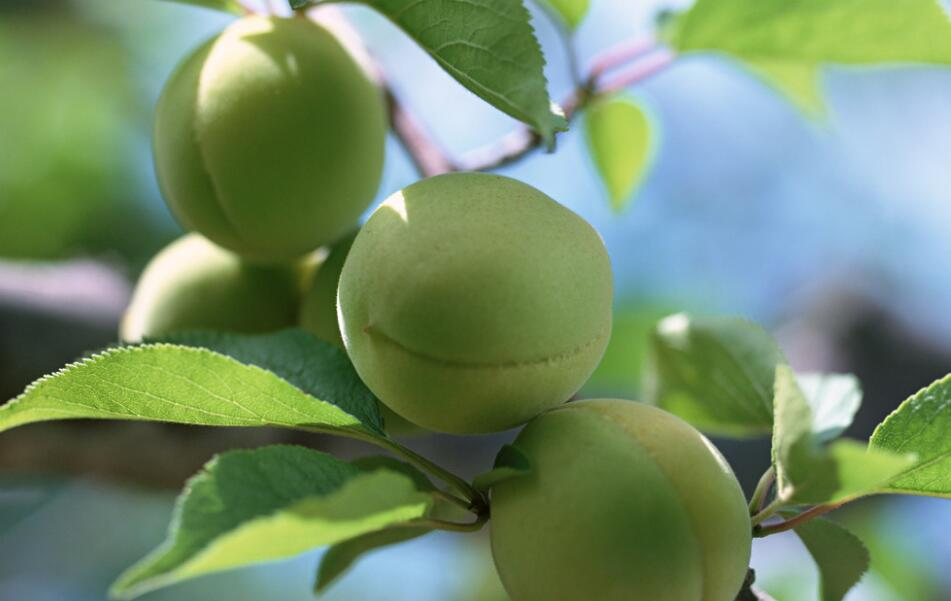

梅子
梅子(别称青梅)，属蔷薇目，是果梅树结的果，但是一般观赏的梅花是另外几种梅。 梅子又名梅、青梅、梅实。梅子是落叶乔木，花红、粉红或白色，盛开于冬春寒冷季节。果实球形，多加工为食品。[1]果梅为蔷薇科杏属梅(Armeniaca mumeSieb.)植物。亦称青梅、梅子、酸梅。原产中国，是亚热带特产果树。

梅原产中国南方，已有三千多年的栽培历史，无论作观赏或果树均有许多品种。许多类型不但露地栽培供观赏，还可以栽为盆花，制作梅桩。鲜花可提取香精，花、叶、根和种仁均可入药。果实可食、盐渍或干制，或熏制成乌梅入药，有止咳、止泻、生津、止渴之效。梅又能抗根线虫危害，可作核果类果树的砧木。
梅子含蛋白质、脂肪、糖类、钾，钙、磷、铁、枸橼酸、苹果酸、柠檬酸、琥珀酸等。
梅子可以鲜食，可以制作梅子茶、梅子酒等，也可以制作成果脯，还可以用作各种点心或菜肴的配料。肺虚久咳、虚热烦渴、久泻、久疟、痢疾、便血、尿血、血崩、蛔虫腹痛患者宜食。梅子含钾量较高，而含钠量较少，长期服用利尿药者，适宜食用梅子或梅汁，胃酸过多者应慎用。梅子具有较强的酸敛性，内有湿热积滞者不宜食用。此外，青梅中含有的氰酸可使人中毒。多食梅子对牙齿不好。
本站文章均来自互联网，仅供学习参考，如有侵犯您的版权，请邮箱联系我们删除！
 上一篇
上一篇